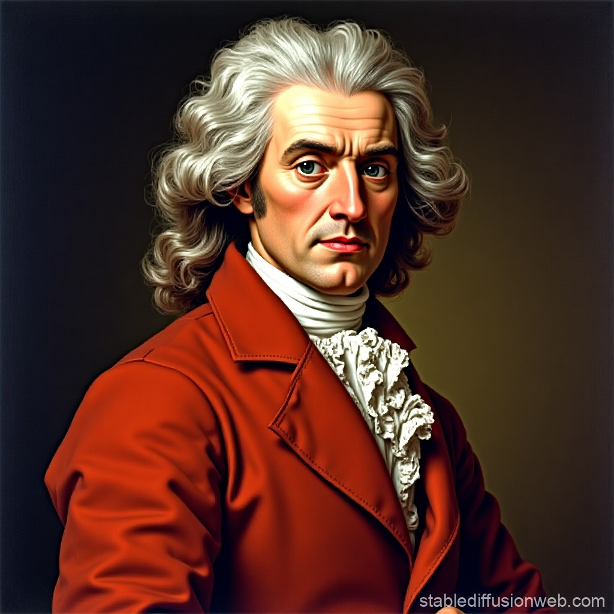

|  |
En 1671, Sir Isaac Newton experimentando en su laboratorio con prismas descubrió que la luz blanca de los rayos del sol está compuesta por todos los colores visibles. Sus experimentos son la base de la colorimetría y desarrollo de la óptica. |

Cooperation through Education in Science and Astronomy Research